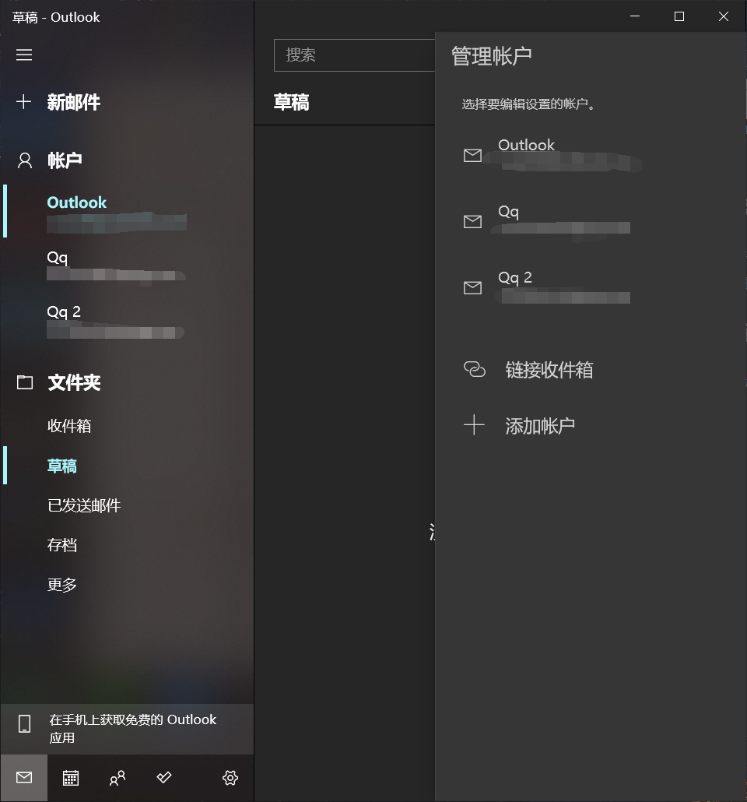
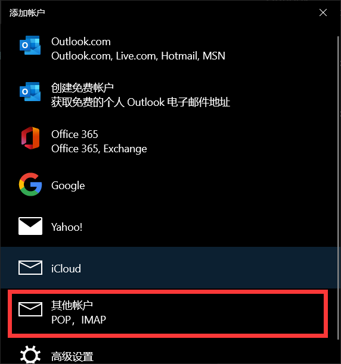
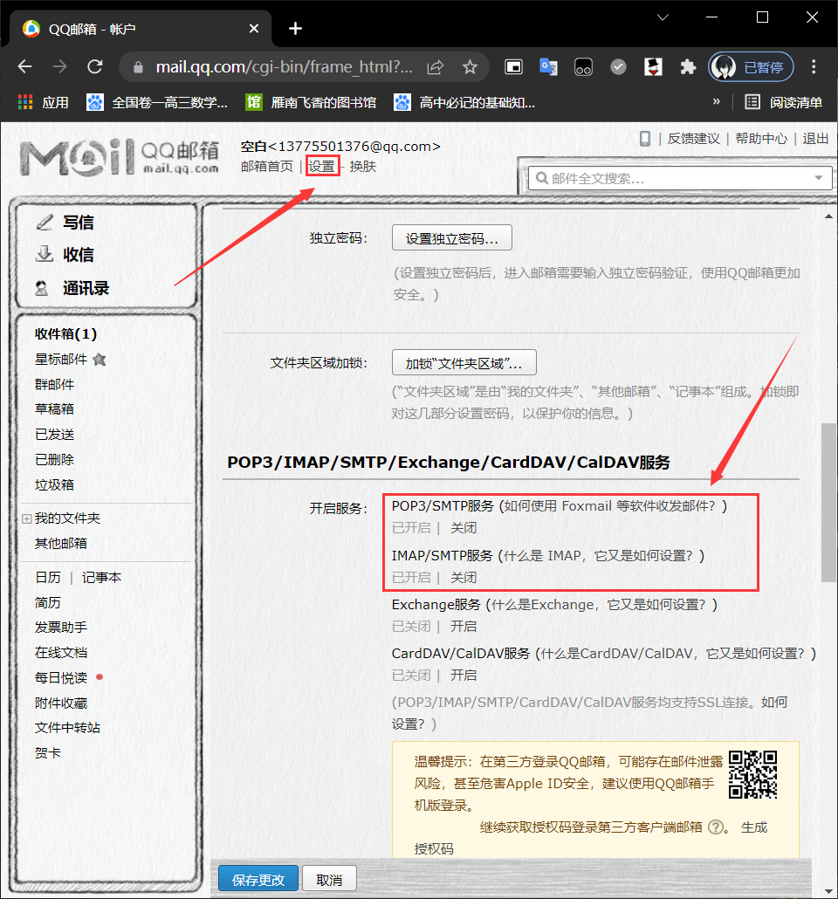
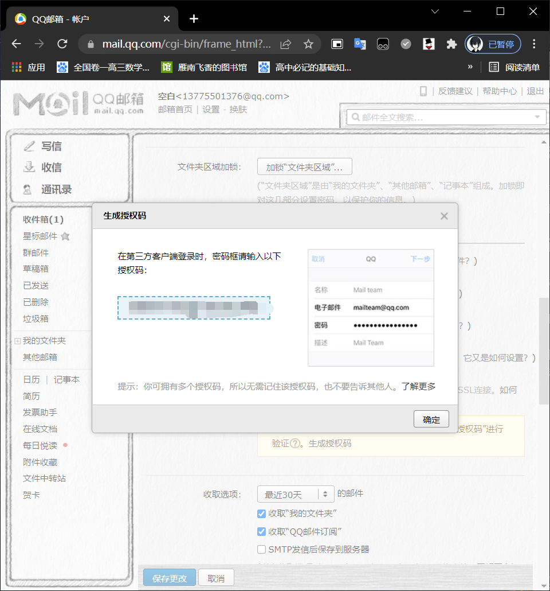
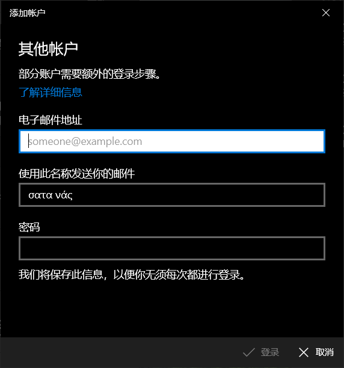

Windows邮件添加QQ邮箱
前序
前段时间折腾黑苹果发现macOS生态下的邮件管理集中方便，看向Windows的邮件除了账户自带的outlook的邮件可以接收之外，想着可以把所有的邮件账户都集中到一起
实施
这里主要就是把QQ的邮件都给整合到Windows下的邮件中，打开Windows自带的邮件，查看账户

选择添加账户，选择其他账户

到这里为止，可以把邮件放一边了，打开浏览器访问QQ邮箱，找到设置->账户->POP3…..服务，将框中前两个服务打开，然后可以获取一串授权码


回到Windows的邮件应用中，在电子邮箱地址栏填自己的邮箱地址，密码栏填写获取到的授权码

总结
把邮件都统一管理会很方便，每天早上打开电脑就能知道有什么事情发生，不会错过会议活动
后记
使用了一段时间发现就算是将邮箱同步到邮件中，还是会导致不同步无法实时收到邮件，按照网上方法打开自动同步还是会有延迟，需要自己手动同步